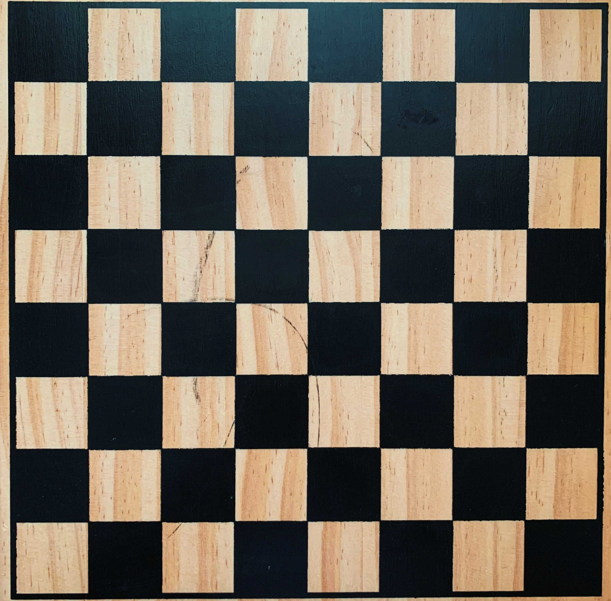

El ajedrez es un juego de tablero entre dos contrincantes en el que cada uno dispone al inicio de dieciséis piezas móviles que se colocan sobre un tablero1 dividido en sesenta y cuatro casillas o escaques.2 En su versión de competición, está considerado como un deporte,3 aunque en la actualidad tiene claramente una dimensión social,456 educativa789 y terapéutica.
Se juega sobre un tablero cuadriculado de 8×8 casillas (también llamadas escaques),2 alternadas en colores blanco y negro, que constituyen las 64 posibles posiciones entre las que se mueven las piezas durante el desarrollo del juego. Al principio del juego cada jugador tiene dieciséis piezas: un rey, una dama, dos alfiles, dos caballos, dos torres y ocho peones. Se trata de un juego de estrategia en el que el objetivo es «derrocar» al rey del oponente. Esto se hace amenazando la casilla que ocupa el rey con alguna de las piezas propias sin que el otro jugador pueda proteger a su rey interponiendo una pieza entre su rey y la pieza que lo amenaza, mover su rey a un escaque libre o capturar a la pieza que lo está amenazando, lo que trae como resultado el jaque mate y el fin de la partida.
Piezas del juego
Para diferenciar un bando de otro, las piezas de un jugador son de color distinto, uno dirige las claras, llamadas «las blancas», y el otro las de color oscuro, llamadas «las negras». Cada jugador dispone de 16 trebejos (piezas) de seis tipos distintos, de los cuales cada jugador tiene: ocho peones, dos torres, dos caballos, dos alfiles, una dama y un rey.
El tablero de ajedrez
El tablero de ajedrez es un cuadrado subdividido en 64 casillas o escaques iguales (8×8), también cuadradas, alternativamente de color claro y de color oscuro. Cada jugador se sitúa de cara al ajedrecista contrincante, colocando el tablero de manera tal que cada jugador tenga una casilla blanca en su esquina derecha.
El reloj de ajedrez
El reloj de ajedrez consiste en un doble cronómetro que mide el tiempo que tiene cada jugador para realizar sus movimientos. Mientras que el reloj del jugador que tiene el turno está en marcha, el de su oponente permanece detenido, hasta cuando el primero efectúe su jugada y detenga su reloj, poniendo así en marcha el reloj del contrario..
REGLAS DEL JUEGO
Cuando el juego comienza, un jugador controla 16 piezas blancas y otro jugador controla 16 piezas negras. El color asignado a cada jugador suele sortearse, aunque en el caso de los torneos está en función del emparejamiento de los jugadores. El tablero es colocado de tal forma que ambos jugadores tengan un escaque blanco en la casilla de la esquina derecha respectiva. Las piezas se ubican de la forma en que se muestra en el diagrama adyacente. Las torres, caballos y alfiles más cercanos al rey suelen llamarse de rey (ejemplo: torre de rey) y las más alejadas, más próximas a la dama se llaman de dama (ejemplo: alfil de dama). Asimismo, el lado donde se encuentran en origen ambos reyes se suele llamar flanco rey y el otro flanco dama.
En el ajedrez tradicional, las piezas se colocan siempre en la forma descrita. Hay variantes (poco frecuentes en la práctica) en las que la situación de las piezas en la primera fila puede variar (Ajedrez aleatorio de Fischer o Ajedrez 960).
Los jugadores mueven por turnos. En cada turno, un jugador solo puede mover una pieza (con la única excepción de una jugada especial llamada enroque, en la cual el rey mueve dos casillas hacia la derecha o hacia la izquierda y la torre se ubica a su lado opuesto). El jugador que juega con las piezas blancas es siempre el que mueve primero.
Una jugada que ataque al rey se conoce como jaque; es obligatorio para el jugador cuyo rey esté atacado salir del jaque. Si no hay defensa posible contra un jaque, el rey está en jaque mate. Ese es el objetivo y quien lo inflige al rey rival, gana.
Texto obtenido de: https://es.wikipedia.org/wiki/Ajedrez#Piezas_del_juego